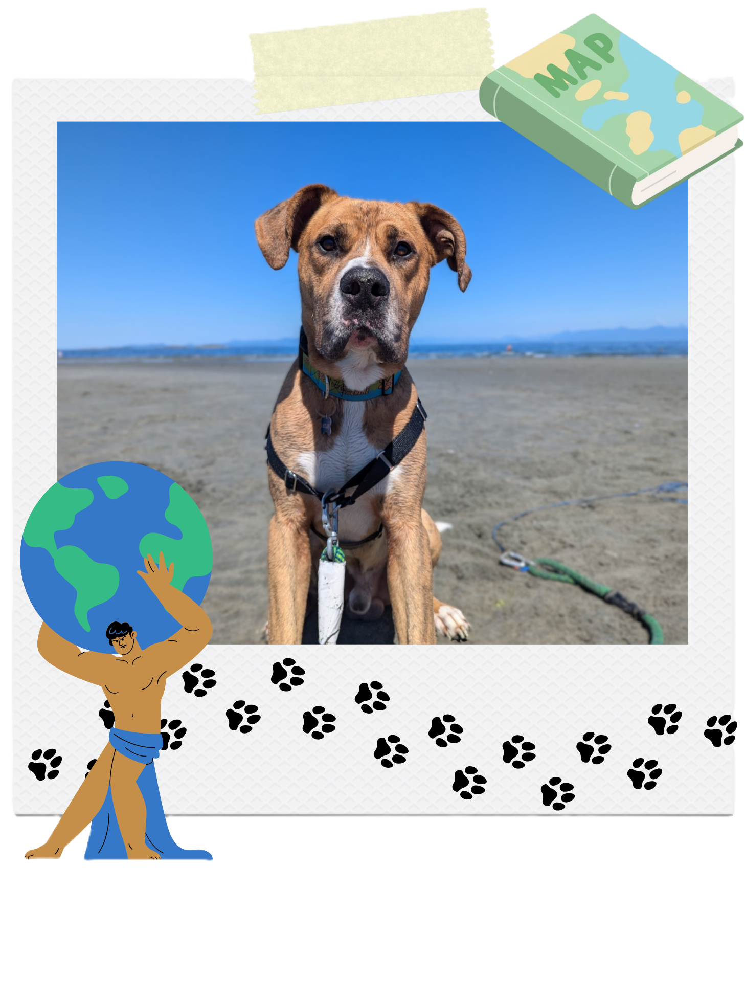

About the Author

Hi my name is Atlas! I am a (almost) four year old Great Dane English & Masstiff (also called a Daniff) dog who has just moved to Mission, BC from North Vancouver, BC. I live with my Mom and spare human, aka Dad. My hobbies include sleeping, crying for attention, and playing with my loud toys. I am a very friendly boy and love meeting new friends. I am also very curious and love exploring new places to pee on. I hope to share my adventures with you through this atlas!